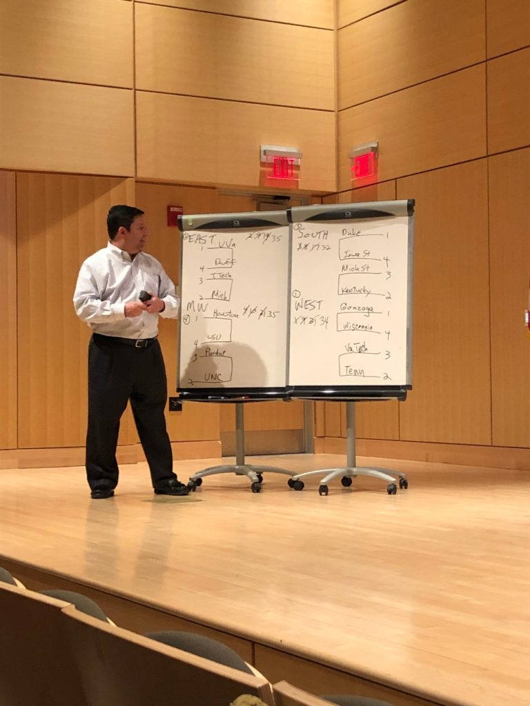
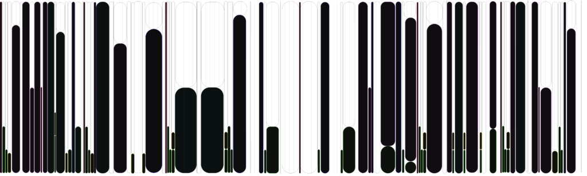
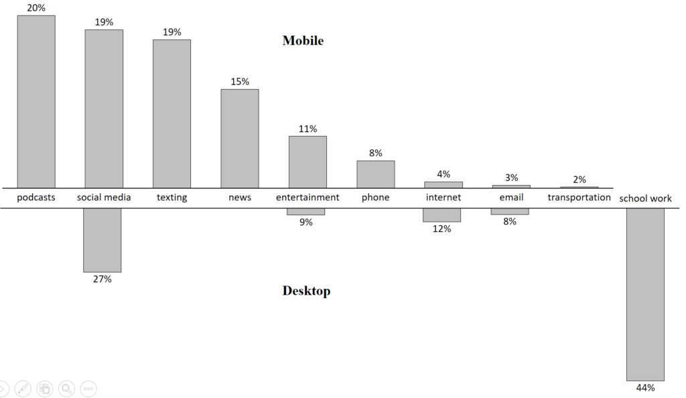

Millions of Americans basked in the beauty of Lady Gaga and Bradley Cooper singing “Shallow,” appreciated the banter of Tina Fey, Amy Poehler and Maya Rudolph and celebrated a night of historic wins during Sunday’s Academy Awards. Viewership of the hostless show rose 12 percent from last year, the first gain in five years. But it was also the second-lowest watched show in history. The decline in live viewing is in part due to cord cutting, driven by the heavily courted millennial demographic.
While the percentage of homes with cable fell 10 percentage points between 2013 and 2018, according to a recent Magid survey, the dive is sharper among millennials. She same survey found 14 percent of those between the ages of 21 and 40 prefered consuming media away from a cable provider. That choice has decreased the amount of money spent on traditional TV, led to continued rise of streaming and subscription services and fundamentally changed the way news, events and information is processed.
Cost savings was cited as the top reason for not having cable among the millennials we questioned the morning after Hollywood’s big night. Ruth Zheng, 28, who didn’t watch the broadcast because she doesn’t pay for cable, said she opted for Netflix, HBO and Hulu subscriptions instead because it’s “more cost effective” and means “you are paying for programs you actually watch.”
“Millennials prefer to have things on demand and are now accustomed to not having to wait to see an entire series vs wait every week for a new episode,” said Olivia Buck, 30.
Not being able to watch live sporting events, award shows and news was cited as the only downside of cord cutting, which has created an expected opportunity for other platforms that thrive in images (i.e. Instagram) and opinion (i.e. Twitter). Many of the millennials we spoke to turned to those platforms, all of which are free, to follow news from the Oscars and tease out highlights, whether during the show or during the commercial breaks.
The connection experienced through social platforms, and texting, creates a double screen experience that is a draw, especially for a younger demographic. Emma Golborne, 27, texted with her friends during the red carpet and shared her feelings when “Free Solo” won, despite her usual quietness on social channels.
The millennials we spoke to were all weighing the finances of their viewing choices—and with reason. Cord cutters save an average of $85 a month, according to a survey from research firm cg42. While they are saving money in the near term, some expect to pay more in the future.
“I imagine these companies will continue to raise prices and by that point, I’ll be so hooked that I’ll simply agree,” said Patricia Lee, 29.
Emma Golborne, 27, said she expects to pay less “just because everyone shares passwords.”
“Our discussion tonight is really about power and the way it operates through technology in the modern world. A question of who decides what tech looks like in modern society. The answer is not ‘we the people’” said Kade Crockford in her introductory remarks at the AI Can’t Fix It teach-in organized by MIT students to protest MIT’s new Stephen Schwarzman College of Computation.
Striving to be “an educational event aimed towards a broader political purpose” (in the words of undergraduate and opening speaker Fiona Chen), the teach-in looked to both critique the college’s stated goals of being a center for ethical AI research and to “provide a vision for what the College of Computation should look like”. The catalyst for the teach-in was Henry Kissinger’s invitation to speak at the February 28th conference being held to celebrate the College. His invitation to talk about AI ethics was held up by teach-in organizers as clear indication that MIT administrator’s claims of addressing ethical and social concerns with the college of computation were “vacuous”.
Panelists also raised other concerns: Elena Sobrino, a graduate student, brought up the MIT endowment investment in the prison industry; Sally Haslanger, a philosophy professor, the concern that “the choice of how to pursue science is being controlled by money … [it] distorts our knowledge search”; Alex Acuñas talked about his indirect encounter with Stephen Schwarzman’s company Blackstone, who provided the majority of funding opposing a California ballot proposition for rent control Alex was organizing in support of; Rodrigo Ochigame discussed MIT’s involvement with a Brazilian coup as part of the same American foreign policy culture as Kissinger.
Students, activists, fellows, and professors alike had dissent they craved to voice. In a field so new, students don’t trust any of the institutions telling them what path to walk. They navigate for themselves, for there is no trail paved, and the traditional trail guides, the leaders in the field, are suspect, engulfed by “a neoliberal tyranny that pits us against one another for profit.”
Of course, universities can be a space for finding one’s own way. But much more is at stake than an undergraduate’s summer internship or a job offer. Crockford put it well: “It is rarefied air that people here breath. People working on these technologies, they are very complex, and most people have no idea what youre talking about which creates a very dangerous situation for democracy and freedom.”
This information asymmetry creates a funnel, wherein lawmakers defer all decision making and power to universities and corporations who then dictate how technology should be developed and how information should be shared.
The panel discussion ended promptly at 7:30, having only had time for a few questions from the audience. Many students lingered, and a feeling of excitement or maybe confusion lingered with them. Some were looking to dive more deeply into the issues raised, and many wanted a more in-depth discussion of AI research and development.
Many attendees of AI Can’t Fix IT had come feeling that these conversations needed to be had. “As soon as MIT made the announcement [of the College] I was distraught, confused”, said an undergraduate studying cognitive science. “This was going to be just another conversation [university administrators] had amongst themselves.” But while a number of perspectives were brought up during the event, she noted that “no people who currently study AI” spoke, and felt that the people who didn’t already know any of the panelists’ perspectives weren’t in the room. Similar sentiments were expressed by an undergraduate in the Comparative Media Studies program, who wasn’t opposed to the discussion of American imperialism (“I know who Kissinger is, but I didn’t know he was part of this [College of Computation conference].”) but had anticipated “getting to dig more deeply” into AI technologies.
When asked, some students felt unfulfilled. A graduate student from the Media Lab said “They kept speaking as if they were going to tell us what steps to take next. But I still don’t know what to do”, and others expressed a panic, or a need to take action without an avenue in which to do so, though there had been some discussion about how to consider working or organizing within tech companies.
Another Media Lab student explained it was unclear whether he should go to the tech company he planned to after graduation, if he should dismantle it from the inside, or if he should reject the offer as an act of protest. Yet, students shared that even if they knew the strategy, it would be easy to act only “if we didn’t feel so powerless” and incapable of solidarity against companies like Facebook and Google.
And what happens if the protest works, another student wondered. “So what if Kissinger doesn’t speak? They just get another puppet?”
Although critiques were plentiful, the energy in the air was riveting. With every radical claim, each hot take, the crowd cheered. Every seat was full, the floor overflowing with students packed shoulder to shoulder, many taking notes, eyes locked on the panelists, leaning into every word.
It was truly empowering to witness organizing on MIT’s campus. One international student, coming from a liberal arts college, expressed surprise and glee at knowing that groups like this were actually forming and organizing. “I never looked for them, I didn’t think it was possible at MIT for people to organize. I didn’t know people cared.”
Yet, like many movements today that are treading in these deeply consequential waters and navigating through unmarked paths, there is mass outrage, but it is unclear how to next act.
As Crockford noted, the information disparities in this digital age are stark, and this information asymmetry is a direct threat to democracy. Yet, it is clear that students of MIT are in a unique position of power. Now is the time to redistribute the wealth of knowledge we hoard, understand the impact of the technology we produce, question the justice of our productions, recognize the harm the institution directly causes, and build off of the momentum of activists growing on campus.
A feed which was broadcast live from the teach-in can be found on the Facebook event.
CAMBRIDGE, MA— The Institute of Politics at Harvard Kennedy School hosted Robert F. Kennedy, Jr. for a lecture titled “The Environmental Activism, American Economy, and Democracy.” Kennedy, the President of the Waterkeeper Alliance and one of the most prominent environmental attorneys in the US gave an impassioned lecture on the importance of protecting the environment as a means to achieve economic prosperity and protect ideals of democracy.
Kennedy started with the story of how he began his career as an environmental attorney by working with the fishermen communities living along the Hudson River. After many members of the community grew tired of the government indifference regarding the pollution caused by corporates along the river during the 1980s, Kennedy worked with other lawyers to galvanize these communities to protect their fishing resources by pursuing a legal solution. Kennedy and his team brought several lawsuits against New York City and several corporates including Consolidated Edison, and General Electric. According to Kennedy, the success of his team in winning several major lawsuits, and their ability to close all the major factories contaminating the Hudson River had a significant impact on saving the Hudson River and in helping them establish the Riverkeeper non- profit environmental group.
As stories about their success started to gain traction, several
communities facing similar water contamination challenges started reaching out
to Kennedy and his team to find solutions to their contaminated water sources.
As a result, Kennedy founded the Waterkeeper Alliance, a non-profit
environmental group that aims to protect rivers all over the US and around the
world. According to Kennedy, the Waterkeeper Alliance is now the fastest
growing water protection agency in the world, with three hundred- and
five-member organizations.
Economic prosperity
vs. Environmental policy
Kennedy argued that it is wrong to think that environmental
policy prohibits economic prosperity. “An investment in our environment is an
investment in our infrastructure, in our assets. These assets such as water can
help us achieve sustainable economic prosperity” Kennedy added. Kennedy believes that “The free market can be
used as a tool to solve all of our environmental problems if used in the right
way.” Kennedy believes that a free market system functioning in the right way
should punish pollution and promote efficiency. “If the cost of pollution is added
to the bills of the companies, they would find ways to pursue more
environment-friendly strategies. The problem is that those companies do not pay
the cost of their pollution, and at the end, poor communities
disproportionately shoulder the cost.”
Free marketers, not
environmental lawyers
The perception of the community towards environmental
lawyers is another aspect that Kennedy believes needs to change. Kennedy sees
his role as a “free marketer who helps improve the efficiency of the free
market capitalism and protects democracy.” According to Kennedy, because
democracy, the environment, and the economy are so intertwined, he believes his
role encompasses working on solutions that address all these fields together in
a way that supports the prospects of future generations.
Robert F.Kennedy Jr. during his lecture
The media’s role in
supporting our environment
In his opinion about the role of the media in promoting
environment-friendly policies and highlighting the atrocities of polluting
companies, Kennedy added “Unfortunately, most of our legal cases and
environmental campaigns do not get covered by the media except if they have a
direct impact on Wallstreet” Kennedy added. Kennedy believes that this is
because of the huge amount of money being poured by many polluting corporations
to control media coverage. Kennedy asserted his belief that of these
corporations, pharmaceutical companies currently “own the press.” “Currently
news shows air around 24 ads per show, 17 of these ads are for pharmaceutical
companies. These companies control the content, and they are doing so
unapologetically. Just look at Anderson Cooper’s show, it proudly mentions that
it is brought to you by Pfizer.”
The legacy for future
generations
Kennedy believes that the fight for protecting our environment is “a fight for leaving a legacy for our children and future generations. They should not have to live in a miserable environment because we were selfish and were only thinking about making short term gain.” According to Kennedy, “We are facing a critical moment in time. The current president is anti-environment policy and is currently working on a bill that would kill the Clean Water Act. Not only that, but we also have the most anti-environment Supreme court in history. Kavanaugh’s mother clearly showed her position during her time as a prosecutor, and Neil Gorsuch’s mother reign as the Environmental Protection Agency administrator was filled with scandals.”
Kennedy concluded his speech with a call to action. “All
these challenges should drive us to organize and act to protect our
environment. We need more grass-roots organizations to work together to support
our environment and the future of our planet.”
My video dispatch of Joe Lunardi, a statistician famous in sports circles for his ability to pick who will make the NCAA March Madness tournament. He gave a talk in Cambridge about how billions in revenues from TV contracts has changed who gets in and who gets out, and what selection officials are doing to fend off concerns of favoring larger conferences who are more coveted by broadcasters.
CAMBRIDGE, MA – On a rainy Sunday afternoon in the basement of the Cambridge Public Library, Joe “Joey Brackets” Lunardi provided an overview of bracketology to the Cambridge community.
Lunardi, who works for ESPN as an analyst and commentator,
is largely known as the creator of bracketology, the “art and science” of predicting
the 68 teams who will be chosen to compete in the March Madness, the NCAA Men’s
Basketball Tournament.
Lunardi started the lecture by providing background on himself and the origin of bracketology. A lifelong sports fan, Lunardi began his sports analytics career as a stat-keeper for his high school basketball and football teams. Later, as a student at Saint Joseph’s University in Philadelphia, Lunardi continued keeping stats for the basketball team. After graduating, he worked as a sports reporter covering college basketball. Later, he became the publisher of “The Blue Ribbon College Basketball Yearbook,” and was eventually invited to publish his rankings and predictions for the March Madness field on ESPN.com for the first time in 2002. The rest is history.
Lunardi educated the audience on the technical and operational requirements of filling the 68 team field for the tournament. Outlining a “multiple overlapping votes” system, Lunardi explained how representatives from the major NCAA conferences convene in New York City over 6 days in early March to iteratively vote on the teams to be invited and subsequently on the seeding of those teams.
Perhaps most interestingly, Lunardi took time to explain some of the underlying revenue mechanics of the tournament. Helping to illuminate the many economic incentives that explain individual school and conference behavior, Lunardi argued that the economic environment is increasingly hostile to “mid-major” universities. As the tournament is increasingly commercialized, Lunardi argued that we will see fewer lesser-known programs compete, replaced by major universities with historically successful basketball programs.
Lunardi fills out a hypothetical bracket with the help of the audience.
The event closed with an interactive session in which members of the audience helped Lunardi to fill out an abbreviated bracket, given the current state of college basketball (the real bracket will not be officially created for another few weeks).
If one thing is clear, the affable and charismatic Lunardi is a true lover of college basketball, happy to share his passion and knowledge with anyone who will listen.
On Sunday February 24th, MIT community members consisting of undergraduates, graduates, and employees presented their ideas to improve MIT to a panel of three judges. The participants’ ideas included websites to help students develop intuition for p-set problems, creating a hands-on volunteering room, and expanding capabilities of online learning platforms. These ideas were pitched for the semi-final stage of the weeklong BetterMIT Innovation Design Challenge.
Timetable summary of my media intake organized by method: laptop, phone, or in person
I kept track of my media consumption on Google Keep for the past week and summarized it with a timetable. This past week, I’ve mostly been working on a research project, so I didn’t spend much time reading articles – my primary method of staying up to date. My time outside of class, homework, and human interaction was primarily reading MATLAB and Python documentation. I was mostly surprised that most of my world news comes from NYTimes’ daily briefing. It had me thinking about the trade off between being able to get my attention with phone notifications versus the information bandwidth, which enables deep dives, limited by screen size.
While exploring ways to log my media intake, I played with a few ideas of visual representation. Perhaps collection of photographs of every piece of media I consumed, or short, 1 second videos. Quickly overwhelmed by the vast amount of media consumed, with 30 new videos and photos over the course of just a few hours, I decided too comprehensive a log would prove unmanageable and unsustainable for the week. In an effort to simplify, I began exploring the idea of graphically portraying that intake. While beginning some graph development, I checked my second most used app behind gmail, Google Calendar.
What a simple design. What clean colors. What a nice way to map how I distribute my time.
And so I began to log my media intake on the calendar. Again, the media log quickly overcame me and my calendar began to flood and overwhelm, so I decided to stick with the structure but move away from the platform. And voila, a visualization was born!
I intended to show one orientation of the image to be portrait and the visualization to scroll and allow the user to hover over each block. I used Adobe XD and was struggling to get the sample video to upload to WordPress. In the meantime, I’ve shown the still shots with the image in landscape.
The x axis is time, the y axis my attention. For each section, my attention is distributed between 1. people and human interaction (white) 2. Spotify, music, and podcasts (green) 3. ads (yellow) 4. entertainment, such as a Cherry Glazer concert or Brooklyn Nine-Nine (blue/purple) 5. class lectures, videos, and workshops (teal) 6. Instagram and Reddit (red) 7. work media such as readings for courses, research, and media content I produce (pink). For many chunks of time, my attention is split between people and media, or Spotify and readings.

Blacked out to see the contrast in media versus non media attention, overall you can see about 50% of my time is devoted to media intake, be it the only thing holding my attention or just music running in the background. A dip in media consumption over the weekend in the middle of the graph comes from a visit to a friend’s family in Western Mass. During that time, spent little to no time consuming media until, only chatting, playing games, and watching a little brother’s basketball tournament until the All Star game that night. I included an all day workshop on Saturday, the two teal half tall chunks, where we needed to both read and consume content produced by community organizers, but also engage with people consistently throughout the day.
WorkFun
Finally, I separated out work from fun. Instagram, Reddit, Spotify, Podcasts, and some news fell into my entertainment or fun graph, the second of this set. While the blue shows concerts and tv shows and is somewhat irregular, taking up almost all of my attention at one time for an extended period of time somewhat irregularly, the green of music and podcasts and the red of instagram and reddit were regular and somewhat constant throughout my week, but took up much less attention space. I get my news sometimes through podcasts, but often spend little time diving into it.
Something that was difficult to track was non-work article consumption. I read news articles and watch videos, but for quite short periods of time regularly and often. I am not a news junky, but get updates from the NYT, WaPo, WSJ, and a few other news outlets. While some articles I will read, I rarely anymore spend extended time on the sites themselves or sifting through stories.
Work was much more difficult to separate out. In classes and research, I read many stories and news stories for work and research, but that have an entertaining quality to them. It was a much more difficult to make labels for the work, and different media started clumping together to form just two groups: out of class work and in class work.
A few takeaways: I listen to podcasts or music frequently throughout the day as background or while doing other work. I have worried I spent too much time on social media apps and entertainment and have put an effort to calm it down, but see the cycle of low work, high work that naturally occurs throughout the week and weekend and find it healthier than I anticipated. I am a bit surprised about how little news I consume. Because the articles I read in work are old but politically minded, it often feels as if I am in touch with what is going on in the world currently. Many of the meme accounts, instagram accounts, and subreddits I follow are feminist, socialist, political, etc. and touch on a lot of news. But I do not go on NYT or WaPo like I used to. I believe it is pretty intentional, but I wonder if it is helpful or constructive to the public sphere.
I tracked my media use from 2/14 – 2/19 using a combination of RescueTime and a notebook to log non-screen media consumption. Reflecting on my week and taking a look at the data I collected, a couple of things surprised me.
I don’t consume a lot of traditional media. I watch almost no TV (don’t have one) and don’t have a login to watch internet cable (the last live TV I watched was the Super Bowl.) I don’t get the paper delivered, nor do I subscribe to mailed magazines. I do have a Netflix account, but watch sporadically (I watched one movie for ~2 hours in the week I logged).
I am extremely reliant on the New York Times for news. I read (or scroll though) the “Home” section of the mobile app most days, and I often listen to “The Daily” podcast. One interesting behavior I noticed is that if I do come across news on social media or the internet, I look to validate it in the NYT app.
I increasingly want someone to tell me how to interpret the news. I’m starting to want to know both the news and what experts think about it. The Daily is great for this, but I also listen to Pod Save America / the People sometimes and Bill Simmons for sports.
Taking a closer look at the data, it’s clear I consume more media on my phone than my computer (though I wanted to show a percentage basis here, the absolute numbers aren’t so stark). I tend to use my phone for social and non-work uses while I use my computer for schoolwork and professional tasks.

Looking at specific apps, I’m getting a lot of my media on social media, and, as mentioned above, almost all of my news from the New York Times. Also a little bit strikingly, I spend very little time reading for pleasure (aside from news), as shown by the only 6% of time with books. One detail with this chart is the podcast number is inflated because I often listen to podcasts while I multitask on my phone.
In closing, a few takeaways for me based on the exercise:
I should probably diversify my news sources. Nothing against NYT, but I think I would be in some ways be more informed if I read other outlets and compared the different ways the news is framed.
I like audio a lot. I am starting to read less and listen more, especially with respect to long form journalism. Podcasts like Caliphate or The Dropout are starting to replace my reading of the New Yorker or the Atlantic.
I was curious to what extent I would be able to cut out TV shows when I got rid of my TV, and I think I’ve been pretty successful. I don’t miss it.